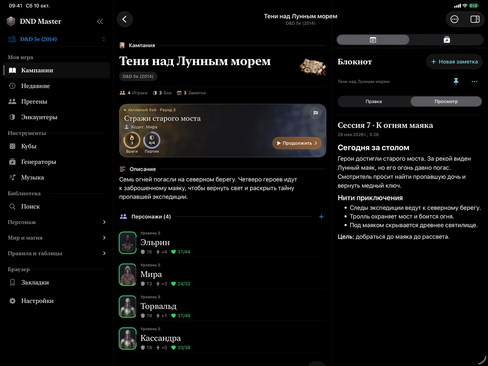

Соберите своё приключение
Кампания объединяет героев, заметки и встречи. Подготовьте сцены заранее, а во время игры возвращайтесь к нужному без поиска по разным приложениям.
- Персонажи и листы, заметки и история боёв
- Подготовленные энкаунтеры и собственные NPC
- Импорт и экспорт кампаний и персонажей файлами